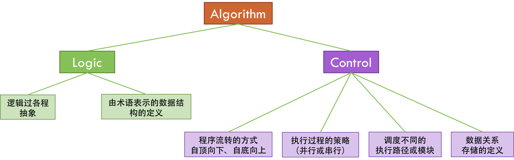
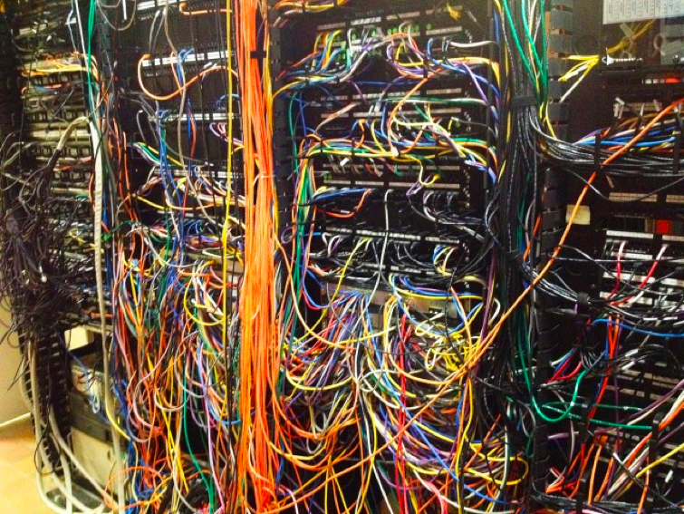

- 000 开篇词 洞悉技术的本质，享受科技的乐趣.md.html
- 001 程序员如何用技术变现（上）.md.html
- 002 程序员如何用技术变现（下）.md.html
- 003 Equifax信息泄露始末.md.html
- 004 从Equifax信息泄露看数据安全.md.html
- 005 何为技术领导力.md.html
- 006 如何拥有技术领导力.md.html
- 007 推荐阅读：每个程序员都该知道的事.md.html
- 008 Go语言，Docker和新技术.md.html
- 009 答疑解惑：渴望、热情和选择.md.html
- 010 如何成为一个大家愿意追随的Leader？.md.html
- 011 程序中的错误处理：错误返回码和异常捕捉.md.html
- 012 程序中的错误处理：异步编程和最佳实践.md.html
- 013 魔数 0x5f3759df.md.html
- 014 推荐阅读：机器学习101.md.html
- 015 时间管理：同扭曲时间的事儿抗争.md.html
- 016 时间管理：投资赚取时间.md.html
- 017 故障处理最佳实践：应对故障.md.html
- 018 故障处理最佳实践：故障改进.md.html
- 019 答疑解惑：我们应该能够识别的表象和本质.md.html
- 020 分布式系统架构的冰与火.md.html
- 021 从亚马逊的实践，谈分布式系统的难点.md.html
- 022 分布式系统的技术栈.md.html
- 023 分布式系统关键技术：全栈监控.md.html
- 024 分布式系统关键技术：服务调度.md.html
- 025 分布式系统关键技术：流量与数据调度.md.html
- 026 洞悉PaaS平台的本质.md.html
- 027 推荐阅读：分布式系统架构经典资料.md.html
- 028 编程范式游记（1）- 起源.md.html
- 029 编程范式游记（2）- 泛型编程.md.html
- 030 编程范式游记（3） - 类型系统和泛型的本质.md.html
- 031 Git协同工作流，你该怎样选.md.html
- 032 推荐阅读：分布式数据调度相关论文.md.html
- 033 编程范式游记（4）- 函数式编程.md.html
- 034 编程范式游记（5）- 修饰器模式.md.html
- 035 编程范式游记（6）- 面向对象编程.md.html
- 036 编程范式游记（7）- 基于原型的编程范式.md.html
- 037 编程范式游记（8）- Go 语言的委托模式.md.html
- 038 编程范式游记（9）- 编程的本质.md.html
- 039 编程范式游记（10）- 逻辑编程范式.md.html
- 040 编程范式游记（11）- 程序世界里的编程范式.md.html
- 041 弹力设计篇之“认识故障和弹力设计”.md.html
- 042 弹力设计篇之“隔离设计”.md.html
- 043 弹力设计篇之“异步通讯设计”.md.html
- 044 弹力设计篇之“幂等性设计”.md.html
- 045 弹力设计篇之“服务的状态”.md.html
- 046 弹力设计篇之“补偿事务”.md.html
- 047 弹力设计篇之“重试设计”.md.html
- 048 弹力设计篇之“熔断设计”.md.html
- 049 弹力设计篇之“限流设计”.md.html
- 050 弹力设计篇之“降级设计”.md.html
- 051 弹力设计篇之“弹力设计总结”.md.html
- 052 区块链技术 - 区块链的革命性及技术概要.md.html
- 053 区块链技术 - 区块链技术细节 - 哈希算法.md.html
- 054 区块链技术 - 区块链技术细节 - 加密和挖矿.md.html
- 055 区块链技术 - 去中心化的共识机制.md.html
- 056 区块链技术 - 智能合约.md.html
- 057 区块链技术 - 传统金融和虚拟货币.md.html
- 058 管理设计篇之分布式锁.md.html
- 059 管理设计篇之配置中心.md.html
- 060 管理设计篇之边车模式.md.html
- 061 管理设计篇之服务网格.md.html
- 062 管理设计篇之网关模式.md.html
- 063 管理设计篇之部署升级策略.md.html
- 064 性能设计篇之缓存.md.html
- 065 性能设计篇之异步处理.md.html
- 066 性能设计篇之数据库扩展.md.html
- 067 性能设计篇之秒杀.md.html
- 068 性能设计篇之边缘计算.md.html
- 069 程序员练级攻略（2018）：开篇词.md.html
- 070 程序员练级攻略（2018）：零基础启蒙.md.html
- 071 程序员练级攻略（2018）：正式入门.md.html
- 072 程序员练级攻略（2018）：程序员修养.md.html
- 073 程序员练级攻略（2018）：编程语言.md.html
- 074 程序员练级攻略：理论学科.md.html
- 075 程序员练级攻略（2018）：系统知识.md.html
- 076 程序员练级攻略（2018）：软件设计.md.html
- 077 程序员练级攻略（2018）：Linux系统、内存和网络.md.html
- 078 程序员练级攻略（2018）：异步IO模型和Lock-Free编程.md.html
- 079 程序员练级攻略（2018）：Java底层知识.md.html
- 080 程序员练级攻略（2018）：数据库.md.html
- 081 程序员练级攻略（2018）：分布式架构入门.md.html
- 082 程序员练级攻略（2018）：分布式架构经典图书和论文.md.html
- 083 程序员练级攻略（2018）：分布式架构工程设计.md.html
- 084 程序员练级攻略（2018）：微服务.md.html
- 085 程序员练级攻略（2018）：容器化和自动化运维.md.html
- 086 程序员练级攻略（2018）：机器学习和人工智能.md.html
- 087 程序员练级攻略（2018）：前端基础和底层原理.md.html
- 088 程序员练级攻略（2018）：前端性能优化和框架.md.html
- 089 程序员练级攻略（2018）：UIUX设计.md.html
- 090 程序员练级攻略（2018）：技术资源集散地.md.html
- 091 程序员面试攻略：面试前的准备.md.html
- 092 程序员面试攻略：面试中的技巧.md.html
- 093 程序员面试攻略：面试风格.md.html
- 094 程序员面试攻略：实力才是王中王.md.html
- 095 高效学习：端正学习态度.md.html
- 096 高效学习：源头、原理和知识地图.md.html
- 097 高效学习：深度，归纳和坚持实践.md.html
- 098 高效学习：如何学习和阅读代码.md.html
- 099 高效学习：面对枯燥和量大的知识.md.html
- 100 高效沟通：Talk和Code同等重要.md.html
- 101 高效沟通：沟通阻碍和应对方法.md.html
- 102 高效沟通：沟通方式及技巧.md.html
- 103 高效沟通：沟通技术.md.html
- 104 高效沟通：好老板要善于提问.md.html
- 105 高效沟通：好好说话的艺术.md.html
- 106 加餐 谈谈我的“三观”.md.html
- 107 结束语 业精于勤，行成于思.md.html
- 捐赠
038 编程范式游记（9）- 编程的本质
我们讲了各式各样的不同语言的编程范式，从 C 语言的泛型，讲到 C++ 的泛型，再讲到函数式的 Map/Reduce/Filter，以及 Pipeline 和 Decorator，还有面向对象的多态通过依赖于接口而不是实现的桥接模式、策略模式和代理模式，以及面向对象的 IoC，还有 JavaScript 的原型编程在运行时对对象原型进行修改，以及 Go 语言的委托模式……
所有的这一切，不知道你是否看出一些端倪，或是其中的一些共性来了？
两篇论文
1976 年，瑞士计算机科学家，Algol W，Modula，Oberon 和 Pascal 语言的设计师 Niklaus Emil Wirth写了一本非常经典的书《Algorithms + Data Structures = Programs》（链接为 1985 年版） ，即算法 + 数据结构 = 程序。
这本书主要写了算法和数据结构的关系，这本书对计算机科学的影响非常深远，尤其在计算机科学的教育中。
1979 年，英国逻辑学家和计算机科学家 Robert Kowalski 发表论文 Algorithm = Logic + Control，并且主要开发“逻辑编程”相关的工作。
Robert Kowalski 是一位逻辑学家和计算机科学家，从 20 世纪 70 年代末到整个 80 年代致力于数据库的研究，并在用计算机证明数学定理等当年的重要应用上颇有建树，尤其是在逻辑、控制和算法等方面提出了革命性的理论，极大地影响了数据库、编程语言，直至今日的人工智能。
Robert Kowalski 在这篇论文里提到：
An algorithm can be regarded as consisting of a logic component, which specifies the knowledge to be used in solving problems, and a control component, which determines the problem-solving strategies by means of which that knowledge is used. The logic component determines the meaning of the algorithm whereas the control component only affects its efficiency. The efficiency of an algorithm can often be improved by improving the control component without changing the logic of the algorithm. We argue that computer programs would be more often correct and more easily improved and modified if their logic and control aspects were identified and separated in the program text.
翻译过来的意思大概就是：
任何算法都会有两个部分， 一个是 Logic 部分，这是用来解决实际问题的。另一个是 Control 部分，这是用来决定用什么策略来解决问题。Logic 部分是真正意义上的解决问题的算法，而 Control 部分只是影响解决这个问题的效率。程序运行的效率问题和程序的逻辑其实是没有关系的。我们认为，如果将 Logic 和 Control 部分有效地分开，那么代码就会变得更容易改进和维护。
注意，最后一句话是重点——如果将 Logic 和 Control 部分有效地分开，那么代码就会变得更容易改进和维护。
编程的本质
两位老先生的两个表达式：
- Programs = Algorithms + Data Structures
- Algorithm = Logic + Control
第一个表达式倾向于数据结构和算法，它是想把这两个拆分，早期都在走这条路。他们认为，如果数据结构设计得好，算法也会变得简单，而且一个好的通用的算法应该可以用在不同的数据结构上。
第二个表达式则想表达，数据结构不复杂，复杂的是算法，也就是我们的业务逻辑是复杂的。我们的算法由两个逻辑组成，一个是真正的业务逻辑，另外一种是控制逻辑。程序中有两种代码，一种是真正的业务逻辑代码，另一种代码是控制我们程序的代码，叫控制代码，这根本不是业务逻辑，业务逻辑不关心这个事情。
算法的效率往往可以通过提高控制部分的效率来实现，而无须改变逻辑部分，也就无无须改变算法的意义。举个阶乘的例子： X(n)！= X(n) * X(n-1) * X(n-2) * X(n-3)* … * 3 * 2 * 1。逻辑部分用来定义阶乘：1） 1 是 0 的阶乘； 2）如果 v 是 x 的阶乘，且 u=v*(x+1)，那么 u 是 x+1 的阶乘。
用这个定义，既可以从上往下地将 x+1 的阶乘缩小为先计算 x 的阶乘，再将结果乘以 1（recursive，递归），也可以由下而上逐个计算一系列阶乘的结果（iteration，遍历）。
控制部分用来描述如何使用逻辑。最粗略的看法可以认为“控制”是解决问题的策略，而不会改变算法的意义，因为算法的意义是由逻辑决定的。对同一个逻辑，使用不同控制，所得到的算法，本质是等价的，因为它们解决同样的问题，并得到同样的结果。
因此，我们可以通过逻辑分析，来提高算法的效率，保持它的逻辑，而更好地使用这一逻辑。比如，有时用自上而下的控制替代自下而上，能提高效率。而将自上而下的顺序执行改为并行执行，也会提高效率。
总之，通过这两个表达式，我们可以得出：
Program = Logic + Control + Data Structure
前面讲了这么多的编程范式，或是程序设计的方法。其实，我们都是在围绕着这三件事来做的。比如：
- 就像函数式编程中的 Map/Reduce/Filter，它们都是一种控制。而传给这些控制模块的那个 lambda 表达式才是我们要解决的问题的逻辑，它们共同组成了一个算法。最后，我再把数据放在数据结构里进行处理，最终就成为了我们的程序。
- 就像我们 Go 语言的委托模式的那个 Undo 示例一样。Undo 这个事是我们想要解决的问题，是 Logic，但是 Undo 的流程是控制。
- 就像我们面向对象中依赖于接口而不是实现一样，接口是对逻辑的抽象，真正的逻辑放在不同的具现类中，通过多态或是依赖注入这样的控制来完成对数据在不同情况下的不同处理。
如果你再仔细地结合我们之前讲的各式各样的编程范式来思考上述这些概念的话，你是否会觉得，所有的语言或编程范式都在解决上面的这些问题。也就下面的这几个事。
- Control 是可以标准化的。比如：遍历数据、查找数据、多线程、并发、异步等，都是可以标准化的。
- 因为 Control 需要处理数据，所以标准化 Control，需要标准化 Data Structure，我们可以通过泛型编程来解决这个事。
- 而 Control 还要处理用户的业务逻辑，即 Logic。所以，我们可以通过标准化接口 / 协议来实现，我们的 Control 模式可以适配于任何的 Logic。
上述三点，就是编程范式的本质。
- 有效地分离 Logic、Control 和 Data 是写出好程序的关键所在！
- 有效地分离 Logic、Control 和 Data 是写出好程序的关键所在！
- 有效地分离 Logic、Control 和 Data 是写出好程序的关键所在！
我们在写代码当中，就会看到好多这种代码，会把控制逻辑和业务逻辑放在一块。里面有些变量和流程是跟业务相关的，有些是不相关的。业务逻辑决定了程序的复杂度，业务逻辑本身就复杂，你的代码就不可能写得简单。
Logic，它是程序复杂度的的下限，然后，我们为了控制程序，需要再搞出很多控制代码，于是 Logic+Control 的相互交织成为了最终的程序复杂度。
把逻辑和控制混淆的示例
我们来看一个示例，这是我在 leetcode 上做的一道题，这是通配符匹配，给两个字符串匹配。需求如下：
通配符匹配
isMatch("aa","a") → false
isMatch("aa","aa") → true
isMatch("aaa","aa") → false
isMatch("aa", "*") → true
isMatch("aa", "a*") → true
isMatch("ab", "?*") → true
isMatch("aab", "c*a*b") → false
现在你再看看我写出来的代码：
bool isMatch(const char *s, const char *p) {
const char *last_s = NULL;
const char *last_p = NULL;
while ( *s != '\0' ) {
if ( *p == '*' ) {
p++;
if ( *p == '\0' ) return true;
last_s = s;
last_p = p;
} else if ( *p == '?' || *s == *p ) {
s++;
p++;
} else if ( last_s != NULL ） {
p = last_p;
s = ++last_s;
} else {
return false;
}
}
while ( *p == '*' ) p++;
return *p == '\0';
}
我也不知道我怎么写出来的，好像是为了要通过，我需要关注于性能，你看，上面这段代码有多乱。如果我不写注释你可能都看不懂了。就算我写了注释以后，你敢改吗？你可能连动都不敢动（哈哈）。上面这些代码里面很多都不是业务逻辑，是用来控制程序的逻辑。
业务逻辑是相对复杂的，但是控制逻辑跟业务逻辑交叉在一块，虽然代码写得不多，但是这个代码已经够复杂了。两三天以后，我回头看，我到底写的什么，我也不懂，为什么会写成这样？我当时脑子是怎么想的？我完全不知道。我现在就是这种感觉。
那么，怎么把上面那段代码写得更好一些呢？
- 首先，我们需要一个比较通用的状态机（NFA，非确定有限自动机，或者 DFA，确定性有限自动机），来维护匹配的开始和结束的状态。这属于 Control。
- 如果我们做得好的话，还可以抽像出一个像程序的文法分析一样的东西。这也是 Control。
- 然后，我们把匹配
*和?的算法形成不同的匹配策略。
这样，我们的代码就会变得漂亮一些了，而且也会快速一些。
这里有篇正则表达式的高效算法的论文Regular Expression Matching Can Be Simple And Fast，推荐你读一读，里面有相关的实现，我在这里就不多说了。
这里，想说的程序的本质是 Logic+Control+Data，而其中，Logic 和 Control 是关键。注意，这个和系统架构也有相通的地方，逻辑是你的业务逻辑，逻辑过程的抽象，加上一个由术语表示的数据结构的定义，控制逻辑跟你的业务逻辑是没关系的，你控制它执行。
控制一个程序流转的方式，即程序执行的方式，并行还是串行，同步还是异步，以及调度不同执行路径或模块，数据之间的存储关系，这些和业务逻辑没有关系。

如果你看过那些混乱不堪的代码，你会发现其中最大的问题是我们把这 Logic 和 Control 纠缠在一起了，所以会导致代码很混乱，难以维护，Bug 很多。绝大多数程序复杂的原因就是这个问题。就如同下面这幅图中表现的情况一样。

再来一个简单的示例
这里给一个简单的示例。
下面是一段检查用户表单信息常见的代码，我相信这样的代码你见得多了。
function check_form_x() {
var name = $('#name').val();
if (null == name || name.length <= 3) {
return { status : 1, message: 'Invalid name' };
}
var password = $('#password').val();
if (null == password || password.length <= 8) {
return { status : 2, message: 'Invalid password' };
}
var repeat_password = $('#repeat_password').val();
if (repeat_password != password.length) {
return { status : 3, message: 'Password and repeat password mismatch' };
}
var email = $('#email').val();
if (check_email_format(email)) {
return { status : 4, message: 'Invalid email' };
}
...
return { status : 0, message: 'OK' };
}
但其实，我们可以做一个 DSL+ 一个 DSL 的解析器，比如：
var meta_create_user = {
form_id : 'create_user',
fields : [
{ id : 'name', type : 'text', min_length : 3 },
{ id : 'password', type : 'password', min_length : 8 },
{ id : 'repeat-password', type : 'password', min_length : 8 },
{ id : 'email', type : 'email' }
]
};
var r = check_form(meta_create_user);
这样，DSL 的描述是“Logic”，而我们的 check_form 则成了“Control”，代码就非常好看了。
小结
代码复杂度的原因：
- 业务逻辑的复杂度决定了代码的复杂度；
- 控制逻辑的复杂度 + 业务逻辑的复杂度 ==> 程序代码的混乱不堪；
- 绝大多数程序复杂混乱的根本原因：业务逻辑与控制逻辑的耦合。
如何分离 control 和 logic 呢？我们可以使用下面的这些技术来解耦。
- State Machine
- 状态定义
- 状态变迁条件
- 状态的 action
- DSL – Domain Specific Language
- HTML，SQL，Unix Shell Script，AWK，正则表达式……
- 编程范式
- 面向对象：委托、策略、桥接、修饰、IoC/DIP、MVC……
- 函数式编程：修饰、管道、拼装
- 逻辑推导式编程：Prolog
这就是编程的本质：
- Logic 部分才是真正有意义的（What）
- Control 部分只是影响 Logic 部分的效率（How）
© 2019 - 2023 Liangliang Lee. Powered by gin and hexo-theme-book.